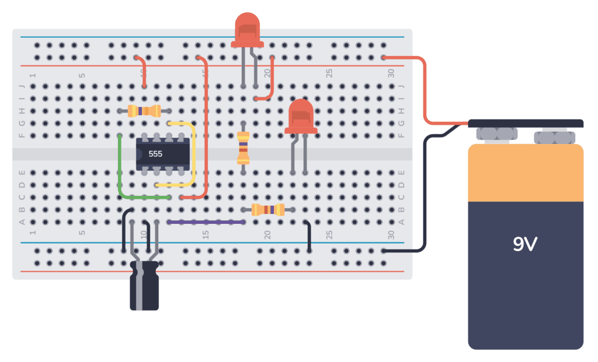
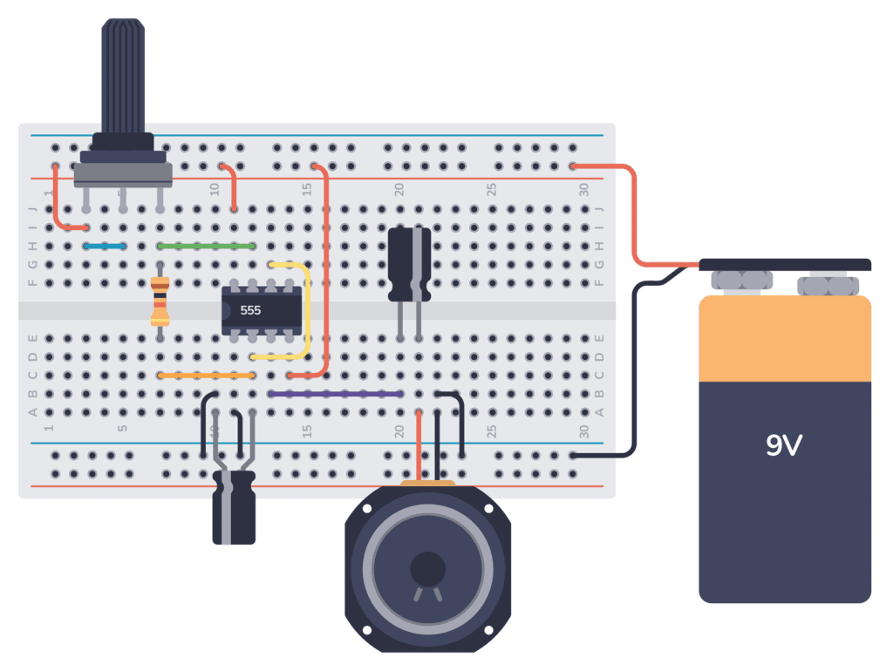

IC555
El temporizador 555 fue desarrollado por la firma Signetics en el 1971 con el nombre SE555/NE555 y se le conoce como el «Circuito Integrado Máquina del Tiempo» (The IC Time Machine).
El IC 555 ha sido llamado "la máquina del tiempo" debido a su capacidad para manejar el tiempo en circuitos electrónicos. A pesar de su antigüedad, sigue siendo fabricado masivamente y es un pilar en la enseñanza y desarrollo de electrónica moderna (Hispavila, 2001).

El 555 es un temporizador flexible, barato y fácil de encontrar. Es un buen punto de partida para multitud de proyectos de cualquier índole, debido a que su versátil salida, se puede conectar directamente a una carga a bajo o a alto.
Modo Monoestable
Es ideal para crear retardos de tiempo. En este modo, un disparador externo hace que el temporizador 555 genere un pulso de una duración ajustable.
Modo Astable
El modo astable está estrechamente relacionado con el modo monoestable. La diferencia importante es que, en modo astable, el pin de disparo, pin 2, está conectado a la patilla umbral pin 6, lo que hace que la salida pase a alternar continuamente entre los estados alto y bajo. En el modo astable, la salida del temporizador 555, es una forma de onda de pulso continuo.
En realidad, el modo astable, se considera un sencillo generador de frecuencias, cuya frecuencia se puede controlar, modificando el valor del potenciómetro o cambiando el valor del condensador, para cambiar el rango de las frecuencias.
Proyecto Luces del Ferrocarril
Esta es un proyecto de luces de ferrocarril con un temporizador 555, en el cual dos luces se alternan, similar a una señal de cruce ferroviario. El temporizador 555 está configurado en modo astable, por lo que cambia continuamente su salida entre ALTA y BAJA, encendiendo y apagando así los dos LED conectados a la salida.
Lista de Componentes
-
555 timer IC
-
C1: Capacitor 10µF
-
R1: Resistencia 47k
-
R2: Resistencia 470
-
LED1 y LED2: Luces LED estándar

Conecta la batería de 9V al riel de alimentación y al riel de tierra para encender el circuito. Las luces intermitentes de ferrocarril con el temporizador 555 deberían comenzar a alternarse.

El proyecto usa un circuito integrado temporizador 555 para crear un efecto intermitente en dos LEDs rojos, que comúnmente se usan para simular las luces parpadeantes en un cruce ferroviario en maquetas de trenes.
El temporizador 555 está configurado en modo “astable”, lo que significa que genera una secuencia continua de pulsos de encendido y apagado.
-
Componentes de temporización: La resistencia (R1) y el condensador (C1) determinan la velocidad con la que parpadean los LEDs. El condensador se carga a través de R1 y, una vez que alcanza cierto voltaje, el temporizador cambia su salida para encender o apagar los LEDs.
-
LEDs y resistencias: Los dos LEDs (LED1 y LED2) están conectados a la salida del temporizador a través de sus respectivas resistencias (R2 y R3), que limitan la corriente para evitar que los LEDs se quemen. Cuando la salida del 555 está en alto, la corriente fluye solo a través del LED inferior y este se enciende. Cuando la salida está en bajo, la corriente fluye solo a través del LED superior, encendiéndolo.
Al alimentar este circuito, el temporizador 555 carga y descarga repetidamente el condensador a una velocidad determinada por R1 y C1, haciendo que el pin de salida alterne entre estados alto y bajo. Esto hace que los LEDs parpadeen, simulando las luces de advertencia que se ven en un cruce ferroviario real.
Proyecto Metrónomo
Un metrónomo es un dispositivo utilizado por los músicos para mantener un tempo constante durante la práctica. En este proyecto, se construirá un metrónomo simple utilizando el circuito integrado temporizador 555.
Lista de Componentes
-
Batería 9V
-
555 Timer IC
-
Potenciómetro, VR1 250kΩ
-
Resistencia, R1 1kΩ
-
2 Capacitores, C1 & C2 22µF
-
Altavoz (Parlante), 8Ω

Conecta el pin 8 (VCC) del temporizador 555 a la columna de alimentación positiva, y el pin 1 (GND) a la columna de alimentación negativa. Además, conecta el pin 4 (RESET) al pin 8 (VCC) para evitar que el temporizador se reinicie.
Utiliza un cable para conectar el pin 6 (THR) al pin 2 (TRIG).
Coloca VR1 y R1 en serie entre el pin 8 (VCC) y el pin 7 (DIS).
Luego conecta el pin 7 (DIS) al pin 6 (THR), formando un lazo con las resistencias en serie y el temporizador.
Conecta el terminal positivo de C1 a la unión entre VR1 y R1, y su terminal negativo al pin 1 (GND). Conecta el terminal positivo de C2 al pin 3 (OUT) y su terminal negativo a uno de los terminales del altavoz.
Finalmente, conecta el otro terminal del altavoz al pin 1 (GND).
Opcionalmente, conecta el pin 5 (CV) a tierra mediante un pequeño condensador de 10nF para estabilizar la frecuencia (no mostrado en el diagrama).

El temporizador 555 está configurado en modo astable, lo que significa que genera una secuencia continua de pulsos. La frecuencia de estos pulsos determina el tempo del metrónomo.
-
Componentes de temporización: Las resistencias (VR1 y R1) y el capacitor (C1) determinan el intervalo entre pulsos, el cual se puede ajustar modificando la resistencia de VR1.
-
Descarga del capacitor: La salida alterna entre estados alto y bajo, lo que hace que C2 se cargue y se descargue, generando así el sonido en el altavoz.
-
Salida al altavoz: Cuando el pin de salida (pin 3) está en alto, C2 se carga a través del altavoz, produciendo un sonido de clic.
Proyecto Atari Punk
Toma su nombre de las antiguas computadoras Atari de los años 80 porque produce sonidos similares. Este circuito es perfecto si ya has construido un par de circuitos simples antes y quieres hacer algo más interesante.
Lista de Componentes
-
Una placa de pruebas (breadboard) para montar el circuito
-
Cables de conexión (jumper wires)
-
Altavoz (mínimo 0.3W)
-
Dos circuitos integrados temporizadores 555
-
C1: Condensador de 10 nF
-
C2: Condensador de 100 nF
-
R1, R4: Resistencias de 1 kΩ
-
R2, R3: Potenciómetros de 100k
-
R5: Resistencia de 470 Ω


El circuito utiliza dos temporizadores 555. El temporizador 555 necesita algunos capacitores y resistencias para establecer el tono o la duración del pulso.
Al combinar uno que establece la frecuencia y otro que controla la duración del pulso, puedes crear sonidos muy llamativos o incluso algo locos.
Referencias
-
Dahl, Ø. N. (2021, June 4). Build an Atari Punk Console this evening. Retrieved from https://www.build-electronic-circuits.com/atari-punk-console/
-
Dahl, Ø. N. (2024a, April 6). 555 timer Metronome Circuit. Retrieved from https://www.build-electronic-circuits.com/555-timer-metronome-circuit/
-
Dahl, Ø. N. (2024, April 6). 555 Timer Railroad Lights. Retrieved from https://www.build-electronic-circuits.com/555-timer-railroad-lights/
-
Hispavila. (2001, April 6). EL IC-555 – HISPAVILA.COM. Retrieved from https://www.hispavila.com/el-ic-555/